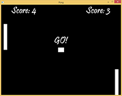

Game of Crates


When: Dec 2nd, 2015
Contribution: Solo Developer
Description: Game of Crates is a puzzle platform game with 15 levels, a simple objective, and a cool game mechanic that allows for some interesting level design. Can you brave all 15 levels?
More Info: Using C++ and SFML, I've built on top of my Ultimate Pong game engine and added graphics, an inclusive menu, and more.
Download: Current code is available for download on GitHub and the game is available for download on Itch.io.
Nicholas-Swift.com
When: Jun 22nd, 2015
Contribution: Solo Developer
Description: No images? No problem! You're looking at the site right now. It's my resume, my portfolio, my contact page, and more. I created this website to showcase my work.
Ultimate Pong
{kind=link}
{kind=link}
{kind=link}
When: May 2nd, 2015
Contribution: Solo Developer
Description: It's the ultimate version of a classic game we all know. There's music, a menu, options, a score counter, and varying levels of artificial intelligence to play against, including 2 player mode.
More Info: Ultimate Pong is my first official game project. It was made with C++ and the SFML framework. It features my own personal game engine, AI algorithms, and UI design and programming.
Download: Code is available for download on GitHub and the game is available for download on Itch.io.
Early Work


When: 2010 - 2014
Contribution: Solo Developer
Description: All of my early work is mostly comprised of Beginning C++ Through Game Programming, Third Edition, online tutorials, and small projects. This work was my introduction to programming, and includes a lot of command prompt projects.
Download: You can check out all the code on GitHub.